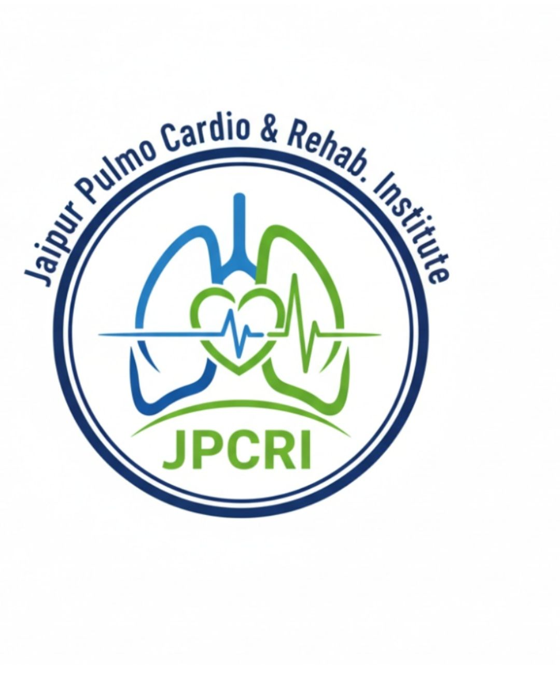

Expert Physiotherapy & Cardiac Rehabilitation by Dr. Rahul (PT)
Advanced Cardiac, Pulmonary & Physiotherapy Rehabilitation Center

Physiotherapist | Lecturer | Founder of JPCRI
Specialized in cardiopulmonary and orthopedic rehabilitation. Dedicated to structured rehab programs for cardiac, pulmonary, neuro and orthopedic patients in Jaipur.
Structured exercise and lifestyle programs for heart patients after MI, CABG, PCI, and chronic heart conditions.
Rehabilitation for COPD, asthma, post-COVID, and chronic respiratory diseases.
Treatment for back pain, knee pain, sports injuries, fractures, and post-surgical rehab.
Stroke, Parkinson’s, spinal cord injury, and neuro-muscular rehabilitation programs.
"My breathing improved a lot after pulmonary rehab at JPCRI. Very professional care."
"After knee surgery, I recovered faster with physiotherapy sessions here."
"Excellent cardiac rehab program. Safe exercises and proper monitoring."
Patients Treated
Years Clinical Experience
Specialized Rehab Programs
Physiotherapist, Lecturer & Founder of JPCRI. Specialized in cardiopulmonary and orthopedic rehabilitation with a vision to build structured rehab programs in Jaipur.
📍 253/4, Gagandeep apartment,Gali no.4,Raja Park, Jaipur,302004